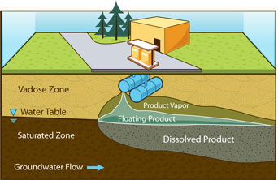
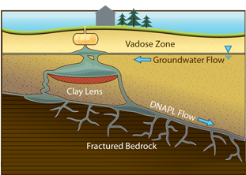

Non-aqueous Phase Liquids (NAPLs)
NAPLs are classified by their density, as shown below.
| LNAPLs | DNAPLs |
|---|---|
| Light non-aqueous phase liquids (LNAPLs) are generally considered to be low density, immiscible organics, including gasoline, petrochemicals, and other chemicals which have specific gravities less than water and therefore float on the water. | Dense non-aqueous phase liquids (DNAPLs) have specific gravities greater than water and include chlorinated solvents and other chemicals. DNAPLS tend to sink in water. |
|  |  |
See the Resources section at the end of this unit for guidance from the EPA regarding sampling strategies for NAPLs.